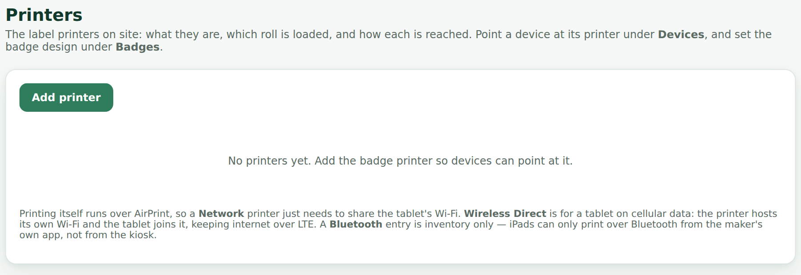
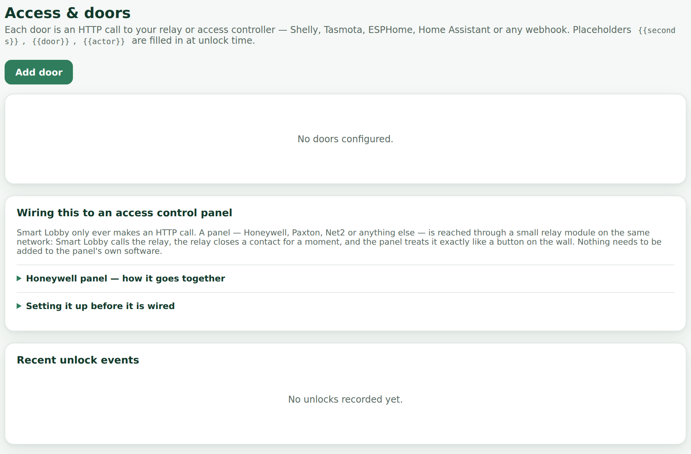
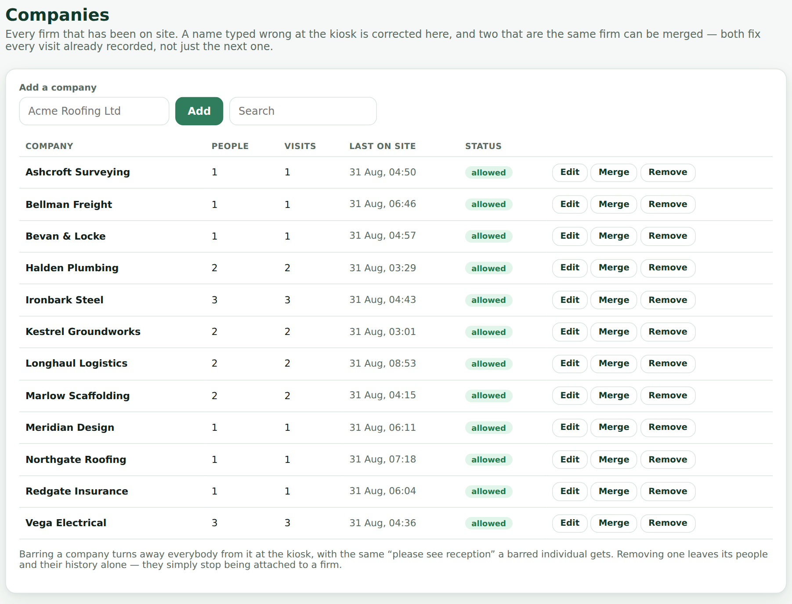
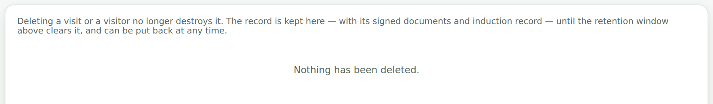
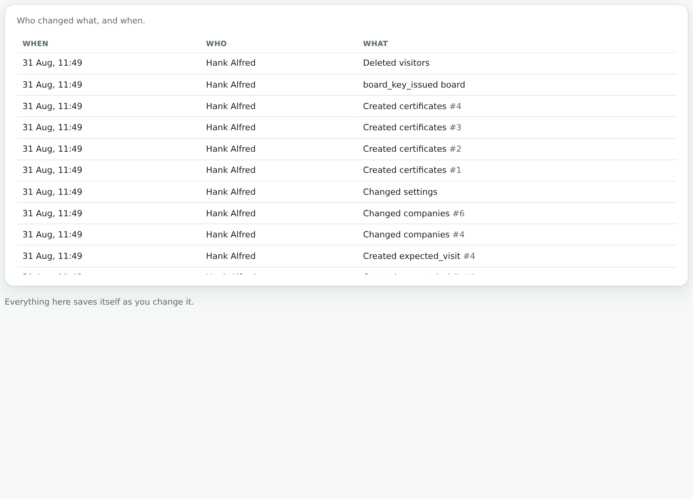

Smart Lobby
Installing it, setting it up, wiring the notifications, and keeping the data safe on the day something goes wrong.
One Node process and one SQLite file. There is no database server to run, no message queue, no build step, and nothing to rebuild when Node updates.
server/
index.js express app, static hosting, retention and auto-sign-out jobs
db.js SQLite schema and query helpers (node:sqlite, no native modules)
settings.js typed defaults, deep-merged over stored overrides
auth.js cookie sessions, bcrypt passwords
roles.js who can see what — the single place that decides
notify.js email and chat webhooks
notify-card.js the chat card model and its renderers
expected.js people booked in before they arrive
backup.js archives, verification, the restore drill
storage.js disk usage and the photo pressure valve
badges.js badge numbering, shared by sign-in and reprinting
localtime.js the site's day, for everything that counts one
routes/
kiosk.js public kiosk API
admin.js authenticated dashboard API
board.js the on-site board
public/
kiosk/ the reception app
admin/ the dashboard
shared/ the common stylesheetdata/smartlobby.db the database
data/uploads/public/ logo, induction slides (served without login)
data/uploads/private/ photos, signatures, parcels (login required)
data/backups/ nightly archivesBack up that folder and you have backed up the system. Copy it to another machine and the system moves with it.
The database is a single file. Do not scale to multiple replicas — two processes writing one SQLite file is how a database gets corrupted.
npm install
npm startKiosk at /kiosk/, dashboard at /admin/, and a device check page at
/check/ that reports what a given tablet's browser actually allows. Use
PORT=3010 npm start for a different port.
The tablet runs the kiosk in its browser; the server runs on a small always-on machine on the same network — a Mac mini, a NUC, an old laptop, a Raspberry Pi. An iPad cannot host the server itself.
npm install && npm start.192.168.1.40.http://192.168.1.40:3000/kiosk/north-gate-ipad.Browsers only allow a live camera preview over https:// or on
localhost. Over a plain LAN address the kiosk automatically falls back to an
Open camera button that launches the tablet's own camera app — the photo is
captured, cropped and attached identically. Nobody hits a dead end. To get the inline preview,
put a reverse proxy with a certificate in front (Caddy does it in two lines).
A kiosk browser app must both hold the camera permission itself and forward the page's
request. Ones that skip the second part deny it silently, with no prompt at all. If no prompt
ever appears, that is the cause. Safari with Guided Access is the reliable alternative, and
/check/ on the tablet confirms it either way.
/data.NODE_ENV=production and PUBLIC_URL=https://your-app.up.railway.app.
DATA_DIR is optional — a Railway volume is detected automatically.Without it, the database and every uploaded photo and slide is erased on each deploy. The app
refuses to be quiet about this: a banner appears in the dashboard, the login screen says so,
/api/health reports "storage":"ephemeral", and the deploy log prints a
warning.
The included Dockerfile installs LibreOffice, poppler and metric-compatible fonts, so uploaded PowerPoint decks render as they look in PowerPoint. It makes the image about a gigabyte and the first build slow. Delete it if you would rather have fast builds and are happy uploading PDF exports of your decks instead.
| Variable | What it does |
|---|---|
DATA_DIR | Where the database and uploads live. Optional on Railway — a mounted volume is found on its own. |
PORT | What to listen on. Defaults to 8080. |
NODE_ENV | production on anything real. |
PUBLIC_URL | The address to use in links it hands out. |
SEED_EXAMPLES | false skips the four example records at
first-run setup entirely. |
CLEAR_EXAMPLES | true deletes them at start-up, once.
Set it, redeploy, remove it. |
Board links, QR codes and the photo in a notification all need an absolute address, and the
server works one out in this order: PUBLIC_URL; then the origin of a real request it
has already served, remembered at start-up; then RAILWAY_PUBLIC_DOMAIN; then
localhost. The middle step is why a link no longer comes out as
localhost:8080 on a hosted deployment with nothing configured — but set
PUBLIC_URL anyway, because a scheduled job firing on a container nobody has visited
yet has nothing else to go on.
A fresh install seeds four visitors, one per type, so the dashboard, board and reports are legible on day one. They are flagged in the database rather than recognised by name, so clearing them cannot touch a real visitor who happens to share one — a genuine John Doe keeps his history. While they are present the dashboard offers Clear them out; the two variables above are for installs where reaching the dashboard first is not what you want.
The first time you open /admin/ it asks you to create the owner account. That is the
whole installation — there is nothing else to provision.
A new install is not an empty screen: it seeds one worked example per visitor type so you can see what a visit, a contractor sign-in, an interview and a driver record actually look like. Clear them from the dashboard when you are ready. They are flagged in the database rather than matched by name, so clearing them can never touch a real visitor who happens to share a name.

Logins are granted from Staff, against a person who already exists there. Five levels:
| Area | Reception | Clerk | Manager | Admin | Owner |
|---|---|---|---|---|---|
| Dashboard | ✓ | ✓ | ✓ | ✓ | ✓ |
| Visits, roll call, expected, staff list | ✓ | — | ✓ | ✓ | ✓ |
| Registry, companies, certificates | ✓ | — | ✓ | ✓ | ✓ |
| Projects | ✓ | — | ✓ | ✓ | ✓ |
| Reports, printable report | ✓ | — | ✓ | ✓ | ✓ |
| Drivers | — | ✓ | ✓ | ✓ | ✓ |
| Deliveries | — | ✓ | ✓ | ✓ | ✓ |
| Settings, backups, devices, accounts, storage | — | — | — | ✓ | ✓ |

The first account is the owner: an administrator that cannot be demoted or removed, because an install nobody can reach the settings on is an install nobody can fix. Only the owner can create another administrator, and only the owner can stage a restore.
A password set by somebody else is temporary. Until it is changed that login can do exactly two things — read who it is, and change its password — so whoever typed it does not go on being able to sign in as that person.
There is no reset email to send. The way back in is on the machine holding the data:
node scripts/reset-password.js # lists the accounts
node scripts/reset-password.js you@example.com 'a new password'On Railway that is a one-off command against the service with the volume mounted. It re-enables the account and signs out every session it had.
Settings → Branding sets the organisation name, the kiosk headline and sign-out message, two brand colours, the time zone and the date format.

It is the site's own, and everything that names a day or a time uses it: the date on a badge and inside the badge number, the "today" counts, the activity and busiest-hour charts, and every arrival time on the dashboard.
Times are stored as UTC, so moving a site to a different zone re-reads the existing history in the new one rather than shifting it. Set this before opening a site and then leave it alone, unless the site itself moves.
Uploads are checked by their actual bytes rather than their file extension, so a mislabelled file is rejected instead of becoming a broken image on the kiosk.
Visitor types is where the kiosk's cards are defined. Each type carries a name in both languages, an icon, and where it appears: its own card on the home screen, an option behind Sign in, both, or hidden.
Add a type — a Cleaner card, an Auditor card — and it immediately gains its own form settings, document assignments, induction targeting and per-device placement.

Press the icon to open a picker of emoji chosen for the job: things that read as a delivery driver or a contractor from six feet away. Anything not in the list can still be pasted in.
The home-screen preview beside the list can be dragged to set the order the kiosk shows the cards in. What you see in the preview is what appears on the tablet.

Settings → Visitor form is a grid: fields down the side, visitor types across the top. Each cell is off, optional or required. Hovering highlights the whole row and the whole column, so you can see which field and which type a dropdown belongs to before changing it.
Under Wording, rename a field per type — a driver is asked for a haulier, not a company — and add a line of help underneath it.

Settings → The order things are asked. Each visitor type has its own order for the four steps: their details, the photo, documents and questions, and the induction deck. A contractor can watch the induction before signing anything while visitors keep the usual order.
Finding the visitor always comes first, because it decides whether the induction is needed at all. A step that does not apply is skipped wherever it sits.
Every saved change bumps a configuration revision. Kiosks check in every 20 seconds and reload when that number moves, so branding, cards, fields, documents and inductions all reach the tablets by themselves. A kiosk part-way through a sign-in waits until the visitor has finished, so nobody has a form rearranged under them mid-typing.
Each document in Documents is assigned to the categories that must sign it, matching the kiosk cards. Deliveries sign nothing.

A document is either wording typed into the dashboard or an uploaded PDF or Word file — also ODT, RTF, plain text or an image. Save the document first, then reopen it and use Upload PDF or Word. The file is rendered to page images so it is read on the kiosk exactly as drafted; the layout of a safety document is part of what is being agreed to.
An uploaded file replaces the typed wording on the kiosk, and Remove file goes back to it with the typed text kept meanwhile. Uploading, replacing or removing a file bumps the document's version, so copies already signed stay exactly as they were signed.
A document can carry its own questions, asked just above the signature: Yes / No, short answer, or choose one from your own options.
A question can depend on an earlier answer — Only ask this if — so a No opens one follow-up and a Yes opens another. A question nobody was shown is never required of them, and if they change the answer above it, the abandoned branch is cleared rather than stored.
A document with questions and the signature switched off is a questionnaire: the visitor answers and carries on. The body text can be left empty.
Answers are stored against the visit alongside the signature and shown with the wording used at the time, so a later edit to a question never changes what a past answer appears to mean.
Create a deck in Induction decks, then drop a .pptx,
.pdf or image onto it. How the file becomes slides, best first:
/api/health reports which you have, and the Induction decks page says plainly whether
it can render properly.

Uploading a new file replaces the slides and bumps the deck version, which is deliberate: everyone sees the new induction once, including people who watched the old one.
Upload the English and Spanish decks as two decks assigned to the same visitor types, with Language set on each. The kiosk plays the one matching the language on screen — switching even at the last moment switches the deck — and falls back to English where no Spanish deck exists. Watching either counts, so nobody sits through the same content twice.
Set minimum seconds per slide and Next shows a countdown that only unlocks when the time is up. A slide already sat through stays unlocked, so re-reading an earlier one costs nothing. Completion is stored per person with the deck version and the seconds taken, and appears on the visit record.
PowerPoint shrinks text that overflows its box and stores only the shrink factor; LibreOffice ignores it and draws the text full size, so a tight slide comes out with words under the pictures. Nothing on the server can undo that. File → Export → PDF bakes the layout in, and the PDF is still split into slides. The same applies to any deck built on a brand font, or on Microsoft's Aptos, for which there is no metric-compatible stand-in.
Badges are off by default. The Badges page holds whether they print at all, the label stock, what the badge shows, a live preview at real size, a test print and reprinting.

Built from tokens, with a live sample beside the field as you type:
| Token | Becomes |
|---|---|
{prefix} | The prefix for that visitor type, or the general one |
{yyyy} {yy} | The year, four or two digits |
{mm} {dd} | Month and day, in the site's time zone |
{type} {TYPE} | The visitor type, lower or upper case |
{seq} | The sequence for that day, zero-padded |
The default {prefix}{yy}{mm}{dd}-{seq} gives NTB260825-004. Set a
different prefix per visitor type so contractors and drivers run separate series —
each series counts on independently, which is why two people can hold C…-001 and
T…-001 on the same day without a clash.
The sequence carries on from the highest number already handed out that day, so deleting a visit leaves a gap rather than letting the next arrival be given a number somebody on site is still wearing.

Printers records name, model, which roll is loaded and its colour, how the printer is reached, a static IP where there is one, and its location. Each device records which printer sits beside it. How a printer is reached matters most, because printing runs over AirPrint:
Register every tablet under Devices. Each gets:
/kiosk/north-gate-ipad — with a one-press copy button. Because
the device is named in the address, a home-screen icon always comes back as that device.
A tablet opened at plain /kiosk/ works too, but shows every card.
Three different clocks, which is worth writing down because they get confused with each other:
| What | How often |
|---|---|
| A tablet checks in | Every 20 seconds |
| The Devices page calls it offline | After 5 minutes of silence |
| The watcher looks at them all | Every 2 minutes |
| A chat card goes out | Once it has been quiet for the notify window — 15 minutes by default |
So from a tablet losing power to a message in Teams is around seventeen minutes at the default setting. The window is Minutes quiet before saying a device is down under Settings → Notifications, and it takes anything from 2 to 1440. Fifteen rather than five is deliberate: site wifi drops for two or three minutes often enough that a five-minute window would produce a channel people mute, which is worse than no channel.
Each device is announced once, not repeatedly, and cleared when it checks in again — so a tablet that has been off all week does not post every quarter of an hour. The card goes to the company channel only; a device going down is not any one host's business.
QR on a device row shows both of its addresses as scannable codes: the tablet's own kiosk address, for setting the tablet up without typing it, and — when phone check-in is on for that device — the address to print on a sign for visitors.

Reissue the phone link mints a new code for that device and invalidates the old one immediately. Every sign already printed stops working, which is exactly what you want when a sign has gone up somewhere it should not have, and exactly what you do not want by accident.
A visitor scans the printed code, and the same kiosk app opens on their phone at
/go/<code> — same fields, same documents, same induction, same visit record. Two
switches gate it, and both must be on:

The distance check is a haversine against the site coordinates. The phone's own reported accuracy is added to the allowance, capped at 500 m: a visitor in the yard whose phone says "somewhere within 200 metres of here" is inside the fence as far as anyone can tell, and refusing them would be the system being confidently wrong. The radius has a floor of 25 m, because a radius of ten metres refuses everybody.
A phone that reports no position at all is treated as its own case rather than as being infinitely far away — the setting Refuse a phone that will not say where it is decides it. Turned off, they are let through and the visit is recorded as usual.
A browser reports whatever coordinates it chooses to. A phone can be told to lie, and a laptop with developer tools open can be told to lie in about fifteen seconds. The fence stops the car park and the Monday-morning lie-in. It is a deterrent, not an access control, and describing it as one to a client or an auditor would be a mistake.
The site's own coordinates are never published: /api/kiosk/config, which is
unauthenticated by necessity, says only whether a fence exists, its radius, and whether a
location is required.
Settings → Notifications. Six channels, each independently switchable, each with a test button:
| Channel | What it needs |
|---|---|
| SMTP host, port, user, password. Any provider. Includes the photo. | |
| Slack | An incoming webhook URL. Photo as a thumbnail. |
| Microsoft Teams | A Workflows URL. Channel post or a DM to one person. |
| Google Chat | An incoming webhook URL. |
| Generic JSON | Any URL. {event, details[], photo_url, timestamp}. |
| SMS | Twilio SID, auth token and a from-number. Numbers converted to E.164. |
Chat notifications go to two places at once: a company channel that sees every arrival, and each person's own webhook for their own visitors. Switch the channel off being always-on and it becomes a fallback for people who have no webhook of their own.
The payload format is detected from the webhook URL, so one host can be on Slack and another on Teams. The format dropdown only applies to URLs that are not recognised.

Arrival, sign-out, induction completed and delivery are separate toggles. SMS has its own arrival and delivery toggles, so texts can be kept for arrivals only.
Separately from any of those, Notify when a device goes offline posts to the company channel when a tablet stops checking in, and again when it returns. It is not a visitor event and never reaches a host's own webhook. Off by default, and the timing is in Chapter 11.
Settings → Notifications → What has been sent lists the last 50 attempts on every channel with the address, the result, and the reason for any failure — including ones skipped because a channel is off.
The visitor completes, and the reason is recorded against the visit. Failed posts are retried after a minute, five minutes and twenty-five minutes, then given up on — posting an arrival an hour after somebody walked in is worse than not posting it.
Tests go to the address in Send test emails to and nowhere else. Secrets — the SMTP password, the Twilio token — are write-only: they come back masked, and the mask is never written back over the real value.
What lands in Teams is designed rather than fixed, per event and per visitor type.
Four events carry their own card: sign-in, sign-out, induction finished and parcel arrived. For each you choose:
A live preview shows the card as Teams will render it, so nothing has to be tested by making somebody sign in.
The photo on a card is tappable: pressing it opens that visitor's record. A card in a phone's Teams app is the one place a photograph is genuinely too small to be useful, and the fix is the same one everywhere else in the system — the picture opens the record it belongs to. The same tap works on the on-site board and on the visit record itself.

Any visitor type can carry its own card for any event. A contractor arrival can look nothing like an interview arrival. Types without their own card fall back to the event's design, so you only override what actually differs.
Up to four buttons on the card, opening the dashboard, the on-site board, the roll call or that visitor's own record — so somebody reading the message in Teams can act on it without hunting for the tab.
Beyond the person being visited, any visitor type can be routed to other staff — a safety officer who wants every contractor, an HR manager who wants every interview. They are picked from checkboxes against the staff you already have, are tagged in the post, and are sent it directly if they have a webhook of their own. Staff marked inactive are dropped automatically.
A mention needs a name and an email address Teams recognises. Somebody with no email on their staff record is not tagged, because a mention Teams cannot resolve renders as raw markup — which is worse than no tag at all.
Each door is one HTTP call. That covers smart relays directly — Shelly, Tasmota, ESPHome, Home Assistant — and reaches a proper access panel (Honeywell, Paxton, Net2) through one: Smart Lobby calls a relay, the relay closes a contact across the door's REX or auxiliary input, and the panel releases the door as if somebody had pressed the exit button. The panel keeps its own schedules, interlocks, fire release and log, and needs nothing added to its software.

Add a door in Access & doors with a URL, method, optional headers and
body. These placeholders are filled in at unlock time: {{seconds}},
{{door}}, {{actor}}, {{visit_id}},
{{timestamp}}.
Shelly relay GET http://192.168.1.50/relay/0?turn=on&timer={{seconds}}
Home Assistant POST http://192.168.1.10:8123/api/services/lock/unlock
Headers: {"Authorization":"Bearer YOUR_TOKEN"}
Body: {"entity_id":"lock.front_door"}Doors fire automatically on sign-in, on sign-out, from a Request entry button on the kiosk, or from Test unlock in the dashboard. Every attempt is logged with who, when, why and the result.
A door can be set up before it is wired: add it, write the panel, door and terminals into its wiring notes, and leave it disabled. It stays listed, is offered on no kiosk, and is never called until you tick Enabled.
When an unlock fails, the result says which end to go and look at — whether the relay refused the connection, could not be found, sat on a network this server cannot reach, never answered, or answered and turned the request down. A 401 or 403 is usually a token in the headers.

The jobs a contractor can be on site for, each with a name, an optional Spanish name and a short code. Contractors pick one at sign-in; the project lands on the visit record, in the visits CSV, and drives hours-per-project on the reports.
Close a finished job by switching Active off: it disappears from the kiosk but keeps its history. A project that has ever been signed in against cannot be deleted, only closed.
A sign-in can arrive with a job already selected, from two sources, most specific first:
A closed project is never suggested, even when it is still set against a firm, so closing a job is enough on its own. And it is only ever a default: the field is filled in and selected, the visitor can change it, and what they choose is what is recorded. A default that could not be overridden would be worse than none, because the day it is wrong is the day somebody is on the other job and nobody notices for a month.
Left as ask them, nothing is suggested and the behaviour is exactly as it was.
Firms are records rather than free text. Because visitors type their own company name, the same firm arrives spelled several ways — the page flags near-duplicates (one letter apart, or the same name with a suffix like Ltd or LLC) and offers to merge them. Renaming fixes a misspelling everywhere at once, including on the visits that recorded it.

Insurance, CSCS cards, method statements — held against a person or a company, each with an expiry date. Configure which kinds are required for which visitor types under Settings → Certificates.
A missing or expired certificate can either warn the desk at sign-in or stop the visitor at the kiosk, depending on how you set it. The dashboard shows what is lapsing so it can be chased before somebody is turned away at the gate.
A backup nobody has ever opened is a promise, not a copy. This chapter is about turning it into a fact before you need it.

A ZIP holding the database and every uploaded file is written nightly to
data/backups/, seven kept, each opened and integrity-checked after it is written. The
first runs a minute after the server starts, so a fresh deploy is never a day away from having any
backup at all.
On their own they answer "something corrupted the database", not "the volume is gone". For that you need a copy somewhere else.
Each new backup can be posted straight into a OneDrive folder. The destination is a Power Automate flow — "When an HTTP request is received" → "Create file" — which needs no Azure app registration and no admin consent. Step-by-step instructions are on the Backups page.
Power Automate refuses a request over about 90 MB, which a site keeping ninety days of photos
passes inside a fortnight. Past that size the archive is cut into numbered pieces —
…-1of4-database.zip, then the files — each a valid archive on its own. The database
goes first, so the most important piece is away even if a later one fails, and the pieces are
numbered so a gap in the folder is obvious.
Every backup in the list carries a Test button. It opens the archive, reads the database inside it and reports whether it would actually restore:
Nothing is written and nothing live is touched. Run it occasionally — a backup you have tested is the only kind worth having.
A files-only piece of a split backup is different: it holds no database, so there is nothing to swap and it is unpacked immediately.
A full volume has no graceful failure. The database stops writing, the kiosk turns people away, and the backup that would have warned you cannot be written either.
The Backups page shows what is using the volume — photos and signatures, the database, backups kept locally — with the percentage used and an estimate of how many days the space left will last, worked out from the last thirty days of arrivals at this site rather than a guess at an average one.

Under When it gets tight, past a threshold the oldest photos are dropped down to a target. Three things it will not do: touch anything inside the floor window (the last fortnight by default), run at all when switched off, or delete quietly — every sweep goes to the audit log with what went and how much it freed.
The visit itself always stays; only the photo on it goes. Free up room now runs it on demand, still respecting the floor.
| Setting | Default | What it means |
|---|---|---|
| Start at | 90% | How full before anything is dropped |
| Clear down to | 75% | Far enough below to buy weeks, not another sweep tomorrow |
| Never touch newer than | 14 days | The window in which somebody actually looks a face up |

Settings → Data retention runs daily and has three separate windows:
Visitor photos and signatures sit behind the admin login; only the logo and induction slides are public. The kiosk shows a privacy notice on the details screen, where the asking happens, rather than burying it in a document nobody reads.

Deleting a visit or a visitor writes the whole record — children and all — to a deleted-records archive first, so one mis-click does not destroy the proof a contractor read the site rules. It can be looked at and put back.

PUBLIC_URL accurate — photo links in notifications are built from it.npm test # every suite
npm test -- board card # only suites whose name contains one of these
npm test -- --keep # leave the test database behind to poke atEach suite gets a freshly started server against a throwaway database, because the rate limiters
are per-process and suites sharing one would start tripping them and failing for reasons that have
nothing to do with the code. The order in test/run.js is deliberate rather than
alphabetical.
The browser suites need Playwright and are skipped, loudly, without it:
npm install -D playwright && npx playwright install chromiumAmong the suites are an attack suite that tries the things an attacker would and fails if any of them work, and a day suite that runs forty people through one kiosk in a single day and checks that the dashboard, roll call, on-site board, reports, paged list, CSV export and printed page all agree about them. A selfcheckin suite covers phone check-in and the fence, a recover suite drives a browser through the two ways out of a sign-in that has gone wrong, and projectdefault covers which job a sign-in lands on before anybody picks one.
No volume is mounted. Everything will be erased on the next deploy. Mount one at
/data before doing anything else.
Workflows requires an Adaptive Card; the older MessageCard format is refused. Smart Lobby sends Adaptive Cards, so a 400 usually means the URL is a legacy Office 365 connector rather than a Workflows one. Create the flow again from "When an HTTP request is received".
The person has no email address on their staff record, or the address is not one Teams can resolve. Add it under Staff.
A font the deck used is missing on the server, so the text reflowed. Export the deck to PDF from PowerPoint and upload that instead — a PDF carries its fonts inside it and is still split into slides.
Open /check/ on that tablet. If it is a third-party kiosk browser, it is almost
certainly not forwarding the request. Use Safari with Guided Access.
Margins must be None, headers and footers off, background graphics on. Then adjust the label size and font scale on the Badges page and print a test.
The card appears only once a door exists and is enabled. A door left disabled for wiring is never offered.
Should not happen — the sequence carries on from the highest number issued that day. If it does, check whether the badge prefix was changed mid-day, which starts a fresh series.
It is staged, not applied. Restart the server; it is applied on the way up.
Look at the breakdown on the Backups page. Photos are almost always the answer. Shorten the photo retention window, or leave the pressure valve to handle it — and check that local backups are not the second-largest thing on the volume.
Day-to-day operation of the desk — expected visitors, deliveries, drivers, the roll call — is in the Front Desk Guide.